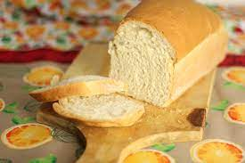

Pão de fôrma

Ingredientes
- 2 colheres (sopa) de azeite
- 1 ovo
- 300 ml de leite
- 1 1/2 colher (café) de sal
- 2 colheres (sopa) de açúcar
- 600 g de farinha de trigo
- 1 1/2 colher (café) de fermento biológico seco
Modo de preparo
- Misturar bem todos os ingredientes.
- Sovar e deixar fermentar.
- Modelar na fôrma e assar a 180º C por 25 a 30 minutos.
Observação
Na máquina de pão misturar, sovar e fermentar. Assar em forno para ficar mais fofo.